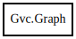

Graph
Object Hierarchy:

Description:
[ Compact ]
[ CCode ( cname = "Agraph_t" , free_function = "agclose" ) ]
public class Graph
Content:
Static methods:
Creation methods:
Methods:
- public unowned string? @get (string attribute_name)
- public int @set (string attribute_name, string attribute_value)
- public unowned Edge create_edge (Node from, Node to, string? name = null, int createflag = 1)
- public unowned Node create_node (string node_name, int createflag = 1)
- public unowned Graph create_subgraph (string? name, int createflag = 1)
- public unowned Graph create_subgraph_id (ulong id, int createflag = 1)
- public int delete_subgraph (Graph subgraph)
- public unowned Edge? find_edge (Node from, Node tO)
- public unowned Node? find_node (string node_name)
- public unowned Graph? find_subgraph (string name)
- public unowned Node? get_first_node ()
- public unowned Graph? get_first_subgraph ()
- public unowned Node? get_next_node (Node node)
- public unowned Graph? get_next_subgraph ()
- public unowned Graph? get_parent_graph ()
- public bool is_directed ()
- public bool is_strict ()
- public int safe_set (string attribute_name, string attribute_value, string? default_value)